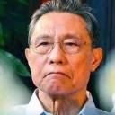
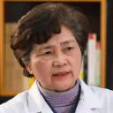
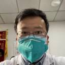
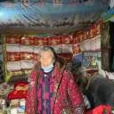
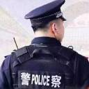

最美人物
- 
医之大者-钟南山
中共党员,中国工程院院士,著名呼吸病学专家,中国抗击非典型肺炎的领军人物。17年前的非典,他奋战在抗击第一线。武汉肺炎发生以来,他给出的建议是不要去武汉,但84岁高龄的他却义无反顾的赶赴武汉防疫最前线。钟南山院士以其战士的勇敢无畏、学者的铮铮风骨和悬壶济世的仁心仁术,挺身而出,冒死犯险。
- 
老太君再出征-李兰娟
中共党员、中国工程院院士,浙江大学医学部教授、博士生导师,感染病(传染病)学家、传染病诊治国家重点实验室主任、国家卫健委高级别专家组成员。2003年,时任浙江省卫生厅厅长的李兰娟遇到了SARS爆发。李兰娟力排众议,坚持己见,在全省只出现一例确诊病例的情况下,当天凌晨就向社会做了通报。大胆决定:把患者接触过的1000多人全部隔离,使浙江全省,在“非典”期间没有出现二次传染、这在全国范围,都是一个奇迹。武汉肺炎爆发之初,李兰娟又顶着全国的压力,大胆建议;“武汉封城”,有效地防止了疫情大规模蔓延。2月1日,李兰娟院士主动请缨,以73岁高龄带领团队紧急驰援武汉。在武汉,她不顾个人安危,每天只睡三个小时,亲自诊断病患、查找病源。一位73岁的老人,在灾难面前,毅然挡在14亿国人的前面,怎能不让人动容。她的科研团队，给国人带来源源不断的信心和希望。她总是在最危急的时刻，用最冷静的头脑，做着事后被证明最正确的决定。
-
与死神赛跑的人-张定宇
中共党员,临床医学博士,武汉市金银潭医院院长。1997年11月,张定宇曾响应国家号召,随中国医疗队出征,援助阿尔及利亚。2008年5月14日,四川汶川地震第三天，张定宇带领湖北省第三医疗队奔赴重灾区什邡市，全力抢救伤员。武汉疫情爆发以来，张定宇隐瞒了身患渐冻症绝症的病情，顾不上被新冠肺炎感染的妻子，不忘初心勇担使命，坚守在抗击疫情最前沿——用渐冻的生命，托起信心与希望。
-
拉响疫情防控警报第一人-张继先
中共党员,主任医师、教授,湖北省中西医结合医院呼吸内科主任。先后荣获抗击非典战役“三等功”、“湖北省卫生厅直属系统优秀共产党员”、四川汶川地震救援省卫生厅颁发的先进集体、“全国医药卫生系统创先争优活动先进个人”等荣誉称号。她忠诚医生责任,是湖北省疫情上报“第一人”。2020年2月4日,她和张定宇一同被湖北省人力资源和社会保障厅、省卫生健康委员会给予记大功奖励。
- 
疫情“吹哨人”-李文亮
中共党员,曾任武汉市中心医院眼科医生。他是2019年12月最早预警武汉肺炎这场危险疫情的8名医生之一。当时人们对新冠肺炎的认识还很有限,李文亮能够把这个消息传出去,率先在专业人员的范围内拉响警报,这是他高度专业性的表现。因“发布不实言论”被警示后,忍辱负重,无怨无悔,全身心投入到抗疫工作中。工作中不慎被新冠病毒感染,经全力抢救无效于2020年2月7日凌晨不幸去世,年仅34岁。
-
舍生忘死奋战在抗疫前线的-无名英雄
这场疫情来得突然、来得猛烈，当病毒无情的肆虐残害着同胞们的躯体时，无数的医护工作者响应国家号召，不顾被感染的风险，别家离子，逆向而行，从全国四面八方奔赴抗击疫情第一线，投入到救治患者阻击病魔的战斗中去。在抗击疫情工作中，一些同志不幸被病毒感染而离世，但活着的同志依然临危不惧、舍我其谁。虽然我们不知道他们一个一个的名字，但他们这种不惧牺牲、勇往直前、勇担使命的精神和情怀，值得每一个国人去敬仰、去尊重。
- 
国有难不做旁观者-倪素英
重庆87岁倪素英老人多年来一直独居,租住在一个老旧门市内,平时摆摊卖小百货来补贴家用,她生活节俭,舍不得为自己多花一分钱。疫情来临时刻,她毫不犹豫地把攒了30多年的积蓄20万元现金捐献给了国家。当她要把这些钱捐出去的时候,社区人员再三劝阻，希望她慎重考虑，毕竟她年岁已高，自己也很需要钱。但她仍然坚持要捐，她坚定地说了这么一句话：“国家有难，我不能做旁观者”。
- 
负重前行的人-陈德春
武汉市公安局轨道分局三金潭派出所民警,疫情发生以来,陈德春一直坚守在一线。2月11日,陈德春接到哥哥电话称老母病逝,他号啕大哭,正是疫情严重时期,无法回家奔丧。擦干眼泪,陈德春朝老家孝感方向磕了三个响头,表达悲痛和歉意。这一幕让同事心碎,也让网友动容。2月14日,楚天都市报联合阿里巴巴天天正能量，授予陈德春“战疫英雄奖”，表达对他的敬意。